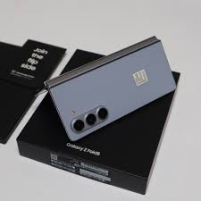

SECOND STORE
Toko HP Second Berkualitas di Ciracas, Kota Serang, Banten

samsung Galaxy z fold 5
- Ukuran Layar: 7.6 inci
- Resolusi Layar: 1768 x 2208 piksel
- Prosesor: Qualcomm Snapdragon 888
- RAM: 12 GB
- Memori Internal: 256 GB / 512 GB
- Kamera Utama: Triple 12 MP
- Kamera Depan: 10 MP
- Baterai: 4400 mAh
- Sistem Operasi: Android 12
Harga: Rp. 19.100.000